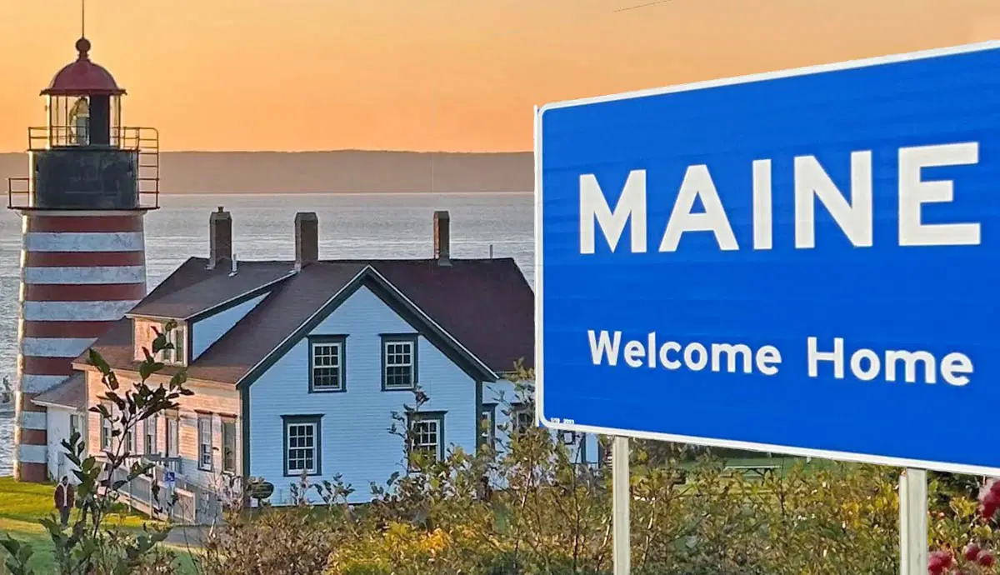
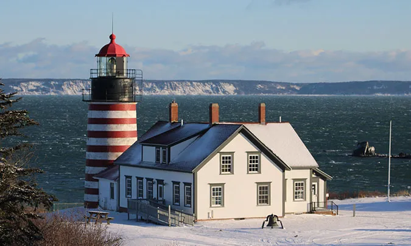
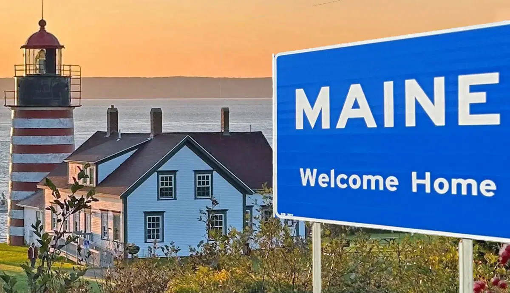
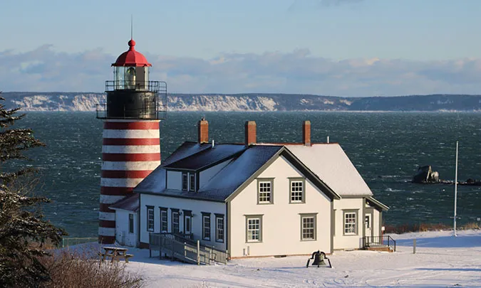

Maine — AQSHning yangi inglizcha (New England) mintaqasidagi eng
shimoliy-sharqda joylashgan shtati. U 1820-yil 15-martda AQSHga 23-shtat
sifatida qo‘shilgan. Maine shtati o‘zining go‘zal tabiati, o‘rmonlari,
qirg‘oqlari va dengiz mahsulotlari (ayniqsa lobster) bilan mashhur.
🗺️ Geografik joylashuvi:
Shimolda va g‘arbda: Kanada (Quebec va New Brunswick provinsiyalari)
Sharqda va janubda: Atlantika okeani G‘arbda: New Hampshire Maine shtati
Atlantika qirg‘oqlari bo‘ylab joylashgan, ko‘plab orollar, fyordlar, va
mayoqchalar mavjud. Hududining katta qismi o‘rmonlar bilan qoplangan.
💼 Iqtisodiyoti:
Maine iqtisodiyoti asosan quyidagilarga asoslangan: Baliqchilik va dengiz
mahsulotlari (lobster, cod, scallops) O‘rmon xo‘jaligi va yog‘och sanoati
Qog‘oz ishlab chiqarish Qishloq xo‘jaligi (kartoshka, olma, sut
mahsulotlari) Turizm (milliy bog‘lar, plyajlar, tabiat yurishlari) Yozgi
turizm juda rivojlangan, ayniqsa qirg‘oq bo‘yidagi shaharlarda va Acadia
National Park atrofida.
🏞️ Diqqatga sazovor joylari:
Acadia National Park — tog‘lar, orollar, qirg‘oq manzaralari Bar Harbor —
mashhur sayyohlik shaharchasi Portland — madaniyat va gastronomiya
markazi, tarixiy port shahar Baxter State Park — Mount Katahdin (Meynning
eng baland nuqtasi) joylashgan Lighthouses (Mayoqchalar) — Portland Head
Light va boshqa tarixiy dengiz mayoqchalari
🎭 Madaniyat:
Maine o‘zining yengil hayot tarzi, tabiatga yaqinlik, va mahalliy san’at
bilan mashhur. Adabiyot ixlosmandlari uchun Maine yozuvchisi Stephen King
— mashhur dahshat romanlari muallifi — aynan shu shtatdan chiqqan.
Mahalliy ovqatlar ichida lobster rolls, clam chowder, va yangi dengiz
mahsulotlari mashhur.
 


